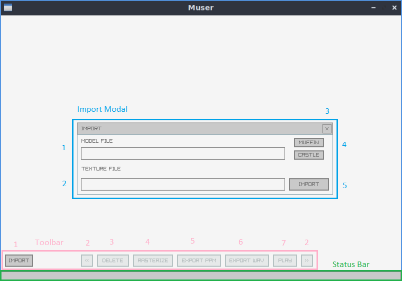

Muser¶
About¶
Muser is a desktop application designed to generate sound from 3D geometry. Users load .obj files as “Muses” which can then be converted to audio data using a custom algorithm that generates an intermediary 2-dimensional spectrogram representing the distrobution of vertices across the Muse’s mesh. Then users can play these generated sounds and export them as both .wav audio files and .ppm image files (for viewing the “spectrogram”).
The GitHub repository for Muser is here: https://github.com/luridarc/muser
Note
This is a proof of concept. Without some specific guidance it is highly likely that most of the geometry converted to audio will just sound like some variation of white noise. Techniques will be discovered in the future to generate more ‘listening-worthy’ sounds.
Note
The audio generated by Muser is 1 second long, and the minimum and max herz ranges are 1k Hz and 20k Hz respectively.
Specifications¶
Current version: v1.0
Developed for Linux
Written in C++
Uses Raylib libraries for graphical output
Uses AudioFile library for writing audio files
Docs built using Sphinx
“Roadmap”¶
v1.1
Add “About” button and modal
Release version for Windows
Add constant model rotation
Add animated background texture
v1.2
Add support for alternate file types
Add support for custom muse names
Reconfigure how files and folders are mapped to individual Muses
Update algorithm to accomodate a wider variety of geometry
v1.3
Create a default muse mesh to be included with Muser
Solidify the three available default model choices
Add click-drag model rotation control
Add rotation on/off button to UI
Add “wait” animations
v2.0
Recreate interface using Dear ImGui framework
Add a “model list” panel to the UI
Add a “ppm viewer” panel to the UI
Add a “waveform viewer” panel to the UI
v?.?
Add functionality that allows users to change audio length, wave patterns associated with material colors, audio effects, etc
Begin integration of some kind of ‘topology sculpting’ system a-la Zbrush
Movement and Muse manipulation in 3D space
How To Use¶
To run Muser, download and export the .zip file, and then in the terminal, navigate to the binary directory and run:
$ ./muser
User Interface¶
Render Window¶
Toolbar¶
Import Model
Opens the Import Modal for importing an
.objmesh into a new Muse.Muse Navigation
Navigate among multiple open Muses using the left and right navigation buttons.
Delete Muse
Deletes the muse currently being viewed.
Rasterize Muse
Rasterizes the Muse’s geometry to its audio buffer, making it available to be converted to an audio or image format.
Export Muse to
.ppmFileExports the currently selected Muse as a
.ppmimage file using the data rasterized to the audio buffer. The exported image is essentially the “spectrogram” used to generate any exported audio from the Muse.Note
Only becomes available once Muse has been rasterized.
Export Muse to
.wavFileExports the currently selected Muse as a
.wavaudio file. The file exported is 1 second long and may not cooperate well with audio players currently, though it seems to play properly within Windows.Note
Becomes available once Muse has been rasterized.
Play Muse Audio
Plays the exported
.wavaudio of the currently selected Muse. (This functionality is expected to work but is currently untested).Note
Becomes available once Muse has been exported to
.wav.
Import Modal¶
This modal is typically hidden and is displayed when IMPORT is clicked in the toolbar.
Model File Input
User input for the file path of the
.objfile to be imported to the Muse. All paths provided should be relative to Muser’s binary directory.Texture File Input
User input for the file path of the image file to be imported to the Muse. Currently
.pngand.jpgare officially supported though other image formats may work. All paths provided should be relative to Muser’s binary directory. The texture is technically optional, and if left out, the model imported will be renderd with a flat black material.Close Modal Window
Default Models
There are two default models that can be imported currently. The corresponding
.objand.pngfiles for these models are saved inres/resources/models/<model name>/.Note
The castle works well, but the muffin model is being evaluated for behavior that lies outside of current parameters. The muffin file may introduce issues or segfaults (this will be fixed in v1.2).
Submit Import
Closes the import modal and imports the new Muse.
Status Bar¶
The status bar displays info relevant to the user after an action has taken place.
Technical Approach¶
The Early issue¶
One of the first issues that became a major point of focus in this project was the development of the algorithm that was to be used in the conversion process. I tried multiple approaches and after going down a long rabbit hole trying to get gaussian interpolation to work for the rasterization algorithm, a collegue reminded me of the rasterization process used in graphics development.
<to be continued>
The buffer¶
The algorithm for converting a 3D mesh into an audio file relies
firstly on having a buffer of values that can be generated
from the mesh and can then be written to a .wav file.
The buffer that we use is a 1-dimensional vector of doubles, but conceptually we are handling it as a 2-dimensional vector. Given that a 3D mesh has UV texture coordinates associated with each vertex, we can imagine our buffer as a spectrogram of sorts, where the rows of the 2D vector signify an amount of hertz, ascending from bottom to top, and the columns signify the sum all of the sine waves of varying Hz and their magnitudes that together make up the combined wave value for that specific audio sample.
<to be continued>